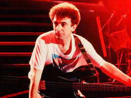

 John Richard Deacon (lahir di Leicester, Britania Raya, 19 Agustus 1951; umur 69 tahun) adalah seorang pensiunan musisi Inggris, yang dikenal sebagai gitaris bass untuk band rock Queen. Dia menggubah beberapa lagu untuk grup — termasuk 10 top hits " You're My Best Friend ", " Another One Bites the Dust ", " Back Chat ", dan " I Want to Break Free " —dan terlibat dalam pengelolaan keuangan band.
Deacon dibesarkan di Oadby, Leicestershire, bermain bass di sebuah band lokal, The Opposition, sebelum pindah untuk belajar elektronik di Chelsea College, London. Dia bergabung dengan Queen pada tahun 1971 pada kekuatan keterampilan musik dan elektroniknya, terutama Deacy Amp buatan rumah yang digunakan oleh gitaris Brian May untuk menciptakan orkestra gitar sepanjang karier Queen. Dari album ketiga, Sheer Heart Attack, dan seterusnya, ia menulis setidaknya satu lagu per album, beberapa di antaranya menjadi hits. Selain bass, Deacon juga memainkan beberapa gitar dan keyboard di studio milik Queen.
Setelah kematian penyanyi utama Freddie Mercury pada tahun 1991 dan Konser Tribute tahun berikutnya, Deacon hanya tampil secara sporadis dengan anggota Queen yang tersisa sebelum pensiun dari industri musik pada tahun 1997 setelah merekam " No-One but You (Only the Good Die Young) ". Dia belum melakukan proyek-proyek lain yang disatukan oleh dua anggota yang tersisa, Brian May dan Roger Taylor.